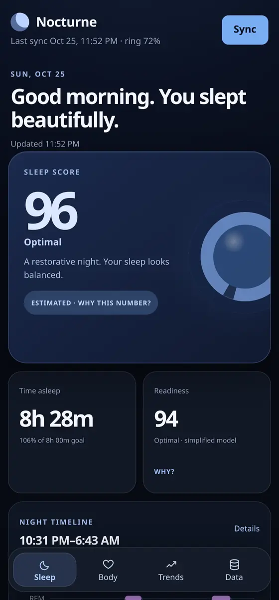
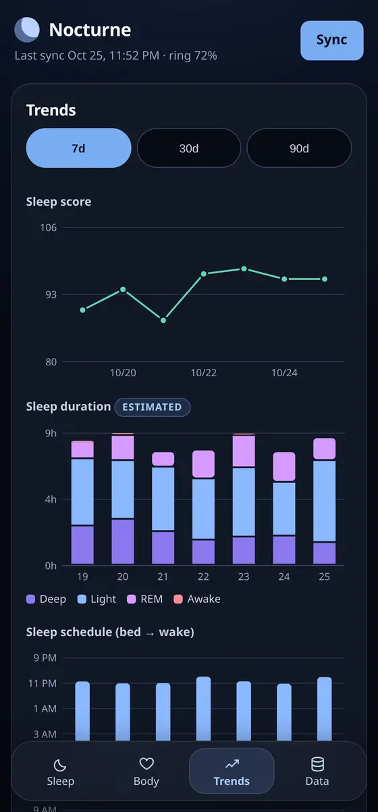
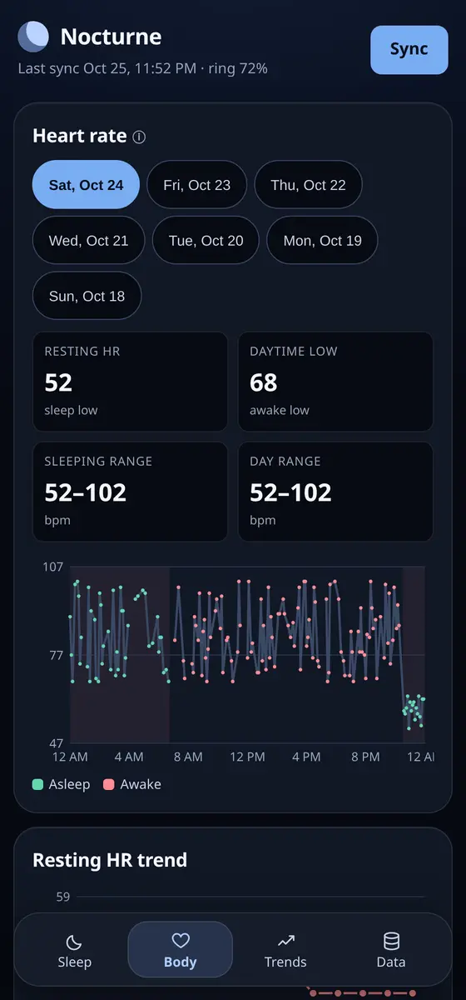

Nocturne
A sleep tracker for the Colmi R02, a twenty-dollar smart ring. Reads the ring over Bluetooth, keeps every sample in a local SQLite file, and renders a sleep score, the night broken into stages, resting heart rate, and seven-day trends.
your words Why you built it instead of using the stock app, and what you actually check in the morning.
Screens captured from the running app on its own demo data


